03 — Analyse Exploratoire des Données (EDA)#
Objectif : Comprendre les patterns, corrélations et insights clés du dataset.
Entrée : data/processed/accidents_clean.parquet
import sys
sys.path.insert(0, '../src')
import pandas as pd
import numpy as np
import matplotlib.pyplot as plt
import matplotlib.gridspec as gridspec
import seaborn as sns
import plotly.express as px
import plotly.graph_objects as go
from plotly.subplots import make_subplots
from scipy import stats
from pathlib import Path
import warnings
warnings.filterwarnings('ignore')
from utils import load_dataframe, GRAVITE_COLORS, PALETTE, cramers_v, CLEAN_DATA_FILE
from visualization import (
plot_gravite_distribution, plot_temporal_heatmap, plot_hourly_risk,
plot_causes_analysis, plot_speed_boxplot, plot_region_radar,
plot_tendance_annuelle, plot_sankey_causes_gravite, plot_dashboard_overview
)
plt.rcParams['figure.dpi'] = 120
FIGURES = Path('../reports/figures')
FIGURES.mkdir(parents=True, exist_ok=True)
df = load_dataframe('../data/processed/accidents_clean.parquet')
print(f'Dataset chargé : {df.shape}')
2026-05-21 19:25:51 | INFO | utils | DataFrame chargé ← ..\data\processed\accidents_clean.parquet (49,783 lignes)
Dataset chargé : (49783, 30)
1. Vue d’ensemble — Dashboard synthétique#
fig = plot_dashboard_overview(df, FIGURES / '03_dashboard_overview.png')
plt.show()
2026-05-21 19:25:53 | INFO | visualization | Figure sauvegardée : ..\reports\figures\03_dashboard_overview.png
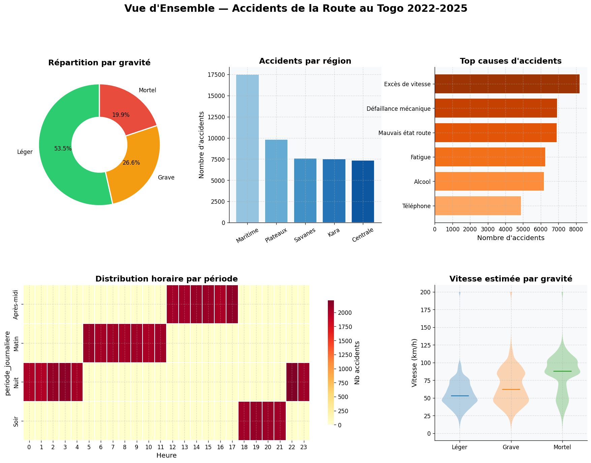
2. Analyse temporelle approfondie#
# Heatmap temporelle
fig_heatmap = plot_temporal_heatmap(df, FIGURES / '03_heatmap_temporelle.png')
plt.show()
# Profil horaire
fig_hourly = plot_hourly_risk(df, FIGURES / '03_profil_horaire.png')
plt.show()
2026-05-21 19:25:56 | INFO | visualization | Figure sauvegardée : ..\reports\figures\03_heatmap_temporelle.png
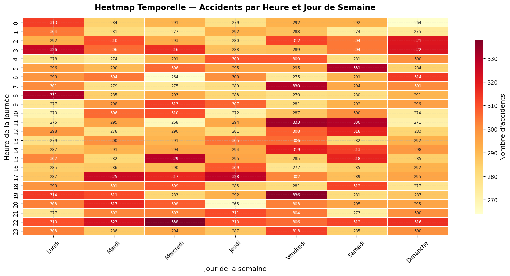
2026-05-21 19:25:58 | INFO | visualization | Figure sauvegardée : ..\reports\figures\03_profil_horaire.png
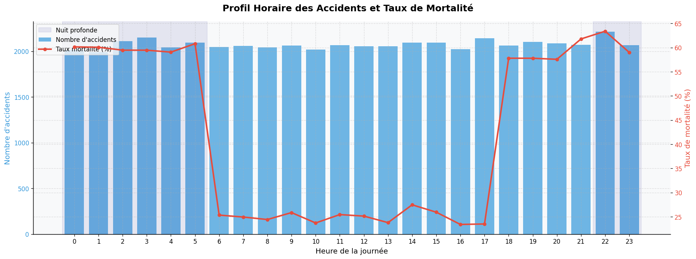
# Évolution mensuelle interactive
fig_trend = plot_tendance_annuelle(df)
fig_trend.show()
# Comparaison jours fériés vs ordinaires
fete_stats = df.groupby('accident_fete').agg(
nb_accidents=('accident_id', 'count'),
taux_mortalite=('gravite', lambda x: (x == 'Mortel').mean() * 100),
vitesse_moy=('vitesse_estimee', 'mean'),
cout_moyen=('cout_estime', 'mean')
).round(2)
print('Impact des jours fériés sur les accidents :')
print(fete_stats)
fig, axes = plt.subplots(1, 3, figsize=(14, 4))
metrics = ['taux_mortalite', 'vitesse_moy', 'cout_moyen']
titles = ['Taux de mortalité (%)', 'Vitesse moyenne (km/h)', 'Coût moyen (FCFA)']
for ax, metric, title in zip(axes, metrics, titles):
values = fete_stats[metric]
colors = ['#27ae60' if v == values.min() else '#e74c3c' for v in values]
ax.bar(values.index, values.values, color=colors, edgecolor='white', linewidth=1.5)
for i, (label, val) in enumerate(zip(values.index, values.values)):
ax.text(i, val * 1.01, f'{val:.1f}', ha='center', fontsize=11, fontweight='bold')
ax.set_title(title, fontweight='bold')
ax.set_xlabel('Jour férié')
plt.suptitle('Impact des Jours Fériés sur les Accidents', fontsize=13, fontweight='bold')
plt.tight_layout()
plt.savefig(FIGURES / '03_jours_feries.png', dpi=150, bbox_inches='tight')
plt.show()
Impact des jours fériés sur les accidents :
nb_accidents taux_mortalite vitesse_moy cout_moyen
accident_fete
Non 49496 19.84 64.279999 2144461.10
Oui 287 21.95 65.139999 2506118.91
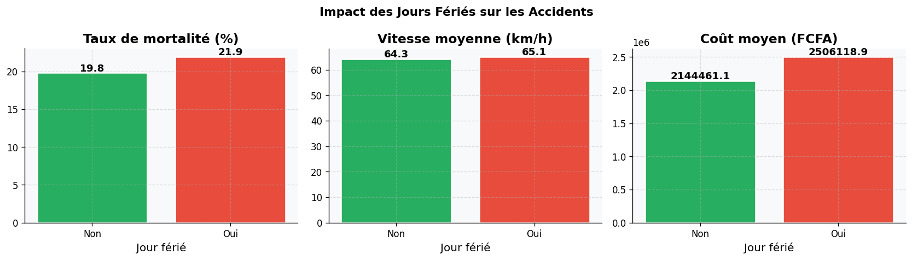
3. Analyse géographique#
# Carte scatter des accidents
sample_map = df.sample(8000, random_state=42)
fig_map = px.scatter_mapbox(
sample_map,
lat='latitude', lon='longitude',
color='gravite',
color_discrete_map=GRAVITE_COLORS,
size_max=6, opacity=0.5,
zoom=6, center={'lat': 8.0, 'lon': 1.1},
mapbox_style='carto-positron',
hover_data=['ville', 'region', 'cause'],
title='Localisation des accidents au Togo (échantillon 8000)'
)
fig_map.update_layout(height=550)
fig_map.show()
# Radar par région
fig_radar = plot_region_radar(df, FIGURES / '03_radar_regions.png')
plt.show()
2026-05-21 19:26:13 | INFO | visualization | Figure sauvegardée : ..\reports\figures\03_radar_regions.png
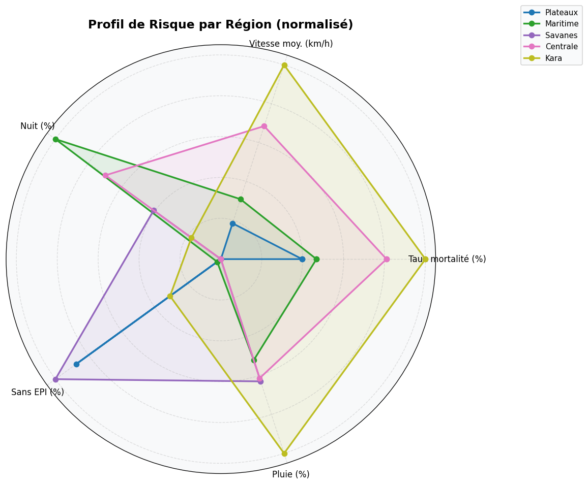
# Heatmap : région × type de route × taux mortalité
pivot_reg = (
df.groupby(['region', 'type_route'])['gravite']
.apply(lambda x: (x == 'Mortel').mean() * 100)
.unstack('type_route')
.round(2)
)
fig, ax = plt.subplots(figsize=(9, 5))
sns.heatmap(pivot_reg, annot=True, fmt='.1f', cmap='YlOrRd', ax=ax,
cbar_kws={'label': 'Taux mortalité (%)'}, linewidths=0.5)
ax.set_title('Taux de Mortalité (%) par Région et Type de Route', fontsize=13, fontweight='bold')
plt.tight_layout()
plt.savefig(FIGURES / '03_heatmap_region_route.png', dpi=150, bbox_inches='tight')
plt.show()
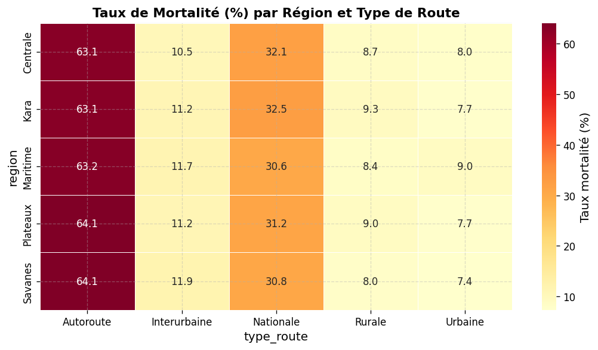
4. Analyse des causes et comportements#
fig_causes = plot_causes_analysis(df, FIGURES / '03_causes.png')
plt.show()
# Sankey Cause → Gravité
fig_sankey = plot_sankey_causes_gravite(df)
fig_sankey.show()
2026-05-21 19:26:15 | INFO | visualization | Figure sauvegardée : ..\reports\figures\03_causes.png
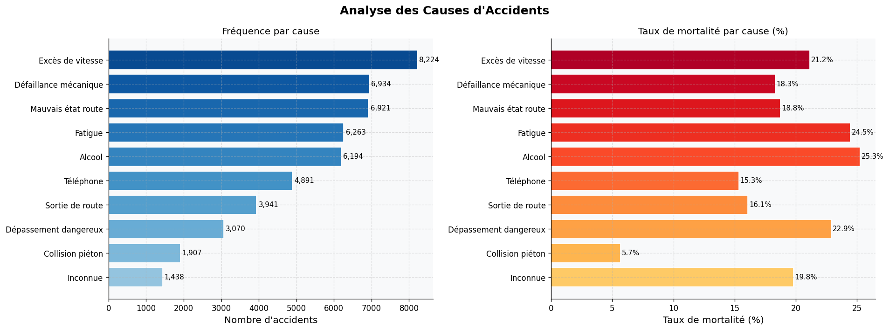
# Port des EPI × Gravité
epi_grav = (
df.groupby(['port_casque', 'port_ceinture', 'gravite'])
.size().reset_index(name='count')
)
# ✅ Fix : Plotly ne supporte pas les Categorical non ordonnées
epi_grav['gravite'] = epi_grav['gravite'].astype(str)
fig = px.sunburst(
epi_grav,
path=['port_casque', 'port_ceinture', 'gravite'],
values='count',
color='gravite',
color_discrete_map=GRAVITE_COLORS,
title='Hiérarchie Port EPI → Gravité (Sunburst)'
)
fig.update_layout(height=450)
fig.show()
5. Analyse de la vitesse#
fig_speed = plot_speed_boxplot(df, FIGURES / '03_vitesse_gravite.png')
plt.show()
2026-05-21 19:26:18 | INFO | visualization | Figure sauvegardée : ..\reports\figures\03_vitesse_gravite.png
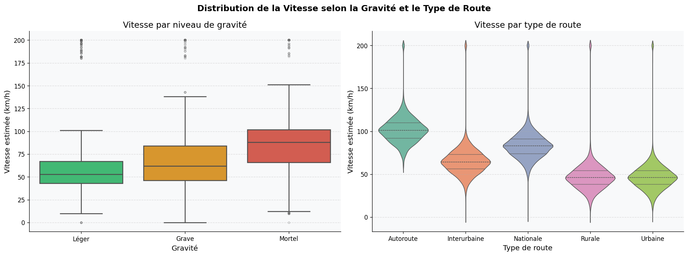
# Excès de vitesse
df['exces_vitesse'] = (df['vitesse_estimee'] - df['limitation_vitesse']).clip(lower=0)
fig, axes = plt.subplots(1, 2, figsize=(14, 5))
# KDE de l'excès de vitesse par gravité
for grav, color in GRAVITE_COLORS.items():
sub = df[df['gravite'] == grav]['exces_vitesse']
sub.plot.kde(ax=axes[0], label=grav, color=color, linewidth=2.5)
axes[0].set_title('Distribution de l\'excès de vitesse par gravité (KDE)', fontweight='bold')
axes[0].set_xlabel('Excès de vitesse (km/h)')
axes[0].legend()
axes[0].set_xlim(0, 120)
# Excès moyen par cause
exces_cause = df.groupby('cause')['exces_vitesse'].mean().sort_values(ascending=True)
colors = plt.cm.YlOrRd(np.linspace(0.3, 0.9, len(exces_cause)))
axes[1].barh(exces_cause.index, exces_cause.values, color=colors, edgecolor='white')
axes[1].set_title('Excès de vitesse moyen par cause', fontweight='bold')
axes[1].set_xlabel('Excès moyen (km/h)')
plt.tight_layout()
plt.savefig(FIGURES / '03_exces_vitesse.png', dpi=150, bbox_inches='tight')
plt.show()
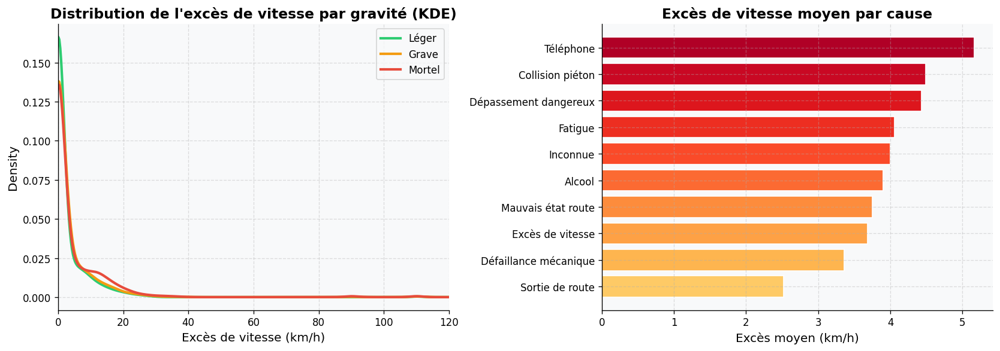
6. Matrice de corrélation & associations#
# Corrélation numérique
num_cols = ['heure', 'nombre_vehicules', 'nombre_victimes', 'nombre_deces',
'limitation_vitesse', 'vitesse_estimee', 'exces_vitesse',
'intervention_secours', 'cout_estime', 'gravite_num']
corr_matrix = df[num_cols].corr()
mask = np.triu(np.ones_like(corr_matrix, dtype=bool))
fig, ax = plt.subplots(figsize=(11, 9))
sns.heatmap(
corr_matrix, mask=mask, annot=True, fmt='.2f',
cmap='RdBu_r', center=0, vmin=-1, vmax=1,
ax=ax, linewidths=0.5, cbar_kws={'shrink': 0.8}
)
ax.set_title('Matrice de Corrélation des Variables Numériques', fontsize=13, fontweight='bold')
plt.tight_layout()
plt.savefig(FIGURES / '03_correlation_matrix.png', dpi=150, bbox_inches='tight')
plt.show()
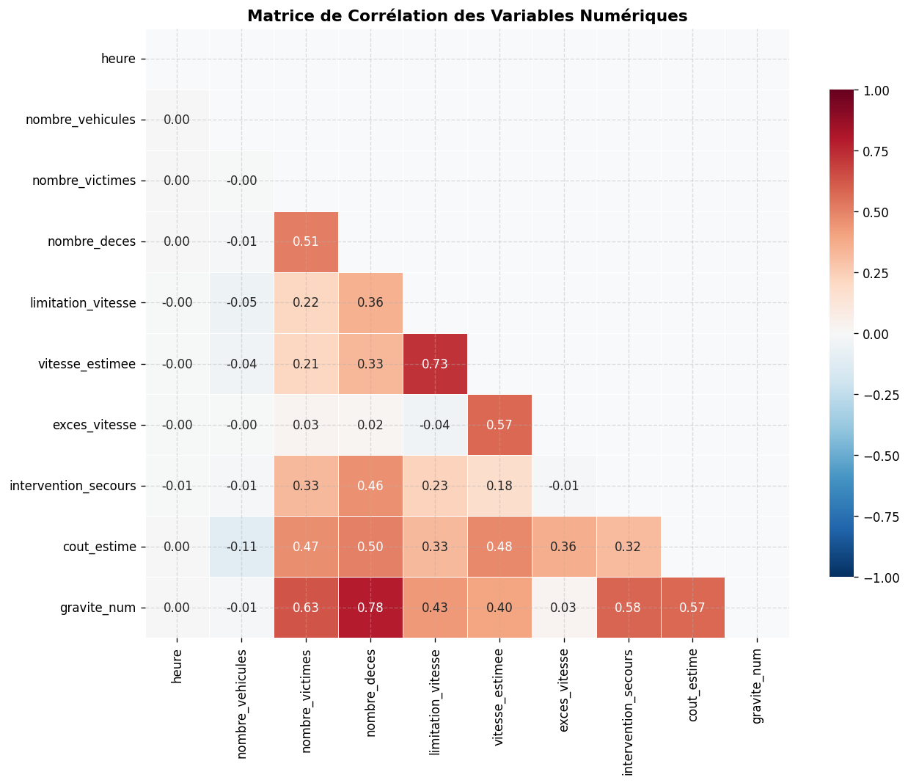
cat_cols = ['region', 'type_route', 'meteo', 'luminosite', 'type_vehicule',
'cause', 'etat_route', 'port_casque', 'port_ceinture',
'type_accident', 'periode_journaliere']
cramers_results = {}
for col in cat_cols:
v = cramers_v(df[col].astype(str), df['gravite'].astype(str))
cramers_results[col] = round(v, 4)
cramers_df = pd.Series(cramers_results, name="Cramér's V").sort_values(ascending=False)
fig, ax = plt.subplots(figsize=(9, 5))
colors = plt.cm.RdYlGn(np.linspace(0.3, 0.9, len(cramers_df))[::-1])
bars = ax.barh(cramers_df.index[::-1], cramers_df.values[::-1], color=colors, edgecolor='white')
for bar, val in zip(bars, cramers_df.values[::-1]):
ax.text(bar.get_width() + 0.002, bar.get_y() + bar.get_height()/2,
f'{val:.3f}', va='center', fontsize=9)
ax.set_title("Association Cramér's V — Variables catégorielles vs Gravité",
fontsize=12, fontweight='bold')
ax.set_xlabel("Cramér's V (0=aucune association, 1=association parfaite)")
ax.axvline(0.1, color='orange', linestyle='--', alpha=0.7, label='Seuil faible (0.1)')
ax.axvline(0.3, color='red', linestyle='--', alpha=0.7, label='Seuil modéré (0.3)')
ax.legend(fontsize=9)
plt.tight_layout()
plt.savefig(FIGURES / '03_cramers_v.png', dpi=150, bbox_inches='tight')
plt.show()
print("Top associations avec la gravité :")
print(cramers_df)
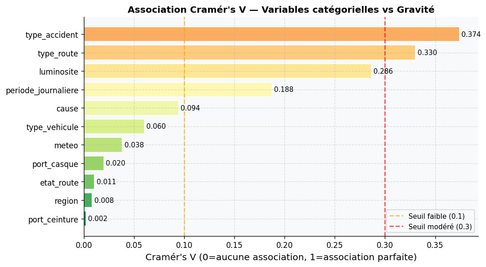
Top associations avec la gravité :
type_accident 0.3741
type_route 0.3303
luminosite 0.2864
periode_journaliere 0.1875
cause 0.0944
type_vehicule 0.0603
meteo 0.0383
port_casque 0.0198
etat_route 0.0106
region 0.0083
port_ceinture 0.0022
Name: Cramér's V, dtype: float64
7. Insights clés — Synthèse#
print('═' * 60)
print('INSIGHTS CLÉS — TOGO ROAD ACCIDENTS EDA')
print('═' * 60)
# 1. Taux de mortalité global
tx_mort = (df['gravite'] == 'Mortel').mean() * 100
print(f'\n1. MORTALITÉ')
print(f' Taux de mortalité global : {tx_mort:.2f}%')
print(f' Décès totaux : {df["nombre_deces"].sum():,}')
# 2. Heure la plus dangereuse
mort_heure = df[df['gravite']=='Mortel'].groupby('heure').size()
print(f'\n2. TEMPOREL')
print(f' Heure la plus meurtrière : {mort_heure.idxmax()}h ({mort_heure.max()} accidents mortels)')
# 3. Cause la plus meurtrière
mort_cause = df[df['gravite']=='Mortel']['cause'].value_counts()
print(f'\n3. CAUSES')
print(f' Cause n°1 : {mort_cause.index[0]} ({mort_cause.iloc[0]:,} accidents mortels)')
print(f' Cause n°2 : {mort_cause.index[1]} ({mort_cause.iloc[1]:,} accidents mortels)')
# 4. Région la plus dangereuse
mort_region = (
df.groupby('region')['gravite']
.apply(lambda x: (x == 'Mortel').mean() * 100)
.sort_values(ascending=False)
)
print(f'\n4. GÉOGRAPHIE')
print(f' Région la plus meurtrière : {mort_region.index[0]} ({mort_region.iloc[0]:.1f}%)')
# 5. Impact EPI
sans_casque = df[df['port_casque']=='Non']['gravite'].value_counts(normalize=True)['Mortel']*100 if 'Mortel' in df[df['port_casque']=='Non']['gravite'].values else 0
avec_casque = df[df['port_casque']=='Oui']['gravite'].value_counts(normalize=True)['Mortel']*100 if 'Mortel' in df[df['port_casque']=='Oui']['gravite'].values else 0
print(f'\n5. ÉQUIPEMENTS')
print(f' Taux mortalité sans casque : {sans_casque:.2f}%')
print(f' Taux mortalité avec casque : {avec_casque:.2f}%')
print(f' Risque relatif : ×{sans_casque/avec_casque:.1f}' if avec_casque > 0 else '')
# 6. Coût économique
cout_total = df['cout_estime'].sum() / 1e9
print(f'\n6. ÉCONOMIQUE')
print(f' Coût total estimé : {cout_total:.2f} milliards FCFA')
print('═' * 60)
════════════════════════════════════════════════════════════
INSIGHTS CLÉS — TOGO ROAD ACCIDENTS EDA
════════════════════════════════════════════════════════════
1. MORTALITÉ
Taux de mortalité global : 19.86%
Décès totaux : 21,112
2. TEMPOREL
Heure la plus meurtrière : 22h (673 accidents mortels)
3. CAUSES
Cause n°1 : Excès de vitesse (1,740 accidents mortels)
Cause n°2 : Alcool (1,564 accidents mortels)
4. GÉOGRAPHIE
Région la plus meurtrière : Kara (20.4%)
5. ÉQUIPEMENTS
Taux mortalité sans casque : 17.68%
Taux mortalité avec casque : 20.13%
Risque relatif : ×0.9
6. ÉCONOMIQUE
Coût total estimé : 106.86 milliards FCFA
════════════════════════════════════════════════════════════
print(' EDA terminée — figures sauvegardées dans reports/figures/')
print('Prochaine étape : notebook 04_sql_analysis.ipynb')
✓ EDA terminée — figures sauvegardées dans reports/figures/
→ Prochaine étape : notebook 04_sql_analysis.ipynb